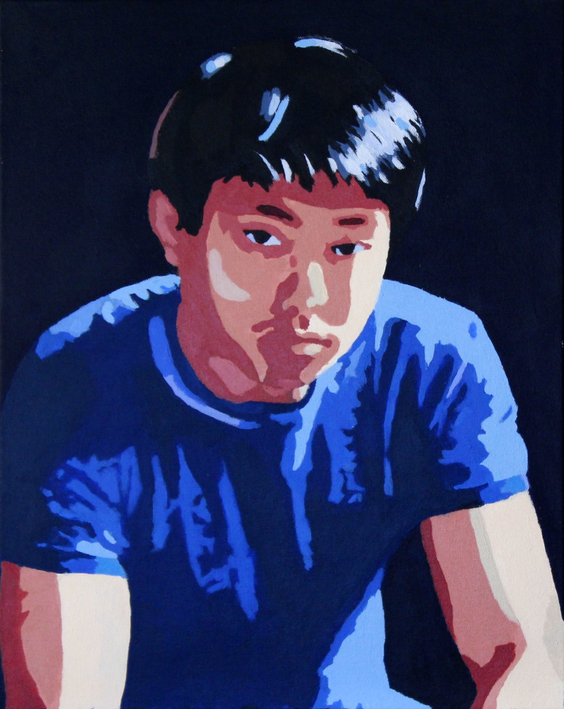

Kevin (AzureKevin)
 Kevin has been drawing ever since he can remember, and at the age of 6 was hand drawing fictional Mario themed levels with one of his childhood friends. He began creating pixel art in earnest back in late 1995, with a Windows 3.1 version of MSPaint.Kevin is also a self-taught musician and guitarist who creates music for fun. His works span original rock music to arrangements of video game music.
He has a BS in Mechanical Engineering from Case Western Reserve University, and over six years of experience in product development, prototyping, CNC machining, and manufacturing.